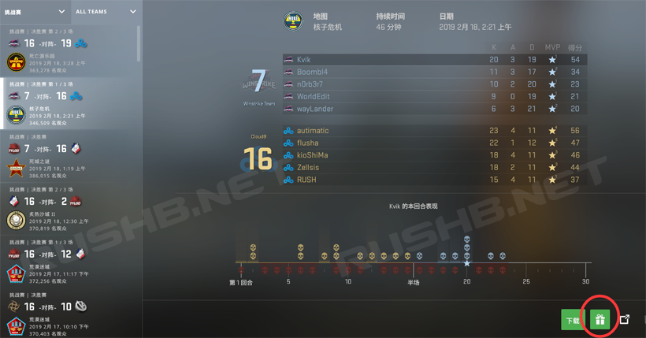

CSGO RushB中文网
CSGO RushB中文网
今年StarLadder柏林2019 Major大赛将在8月23日至9月8日举行，想要纪念包的话不要错过。
CSGO Major大赛StarLadder柏林2019赛程及更多信息请看这里。
CSGO最重大的比赛Major/锦标赛每年会举办两届，在以前，玩家在大赛期间观看有机会掉落武器纪念包（纪念箱）。不过从Major大赛IEM卡托维兹2019开始改变了纪念包获得方法，而不再是单纯观看比赛获得，以后的Major也是如此。
首先，想要获得纪念包的玩家需要购买并激活柏林2019观众通行证，并参与任务升级硬币，就可兑换纪念包。StarLadder柏林2019观众通行证价格为69元，此外还有观众通行证+3纪念包代币，价格为126元，可额外兑换3个纪念包。
详细请看《CSGO Major大赛StarLadder柏林2019通行证介绍》。
激活通行证后，我们需要完成16个任务来升级活动硬币，任务如下：
- 在赛事结束前激活你的纪念币
- 在一场竞技模式比赛中选择炼狱小镇地图并赢得十个回合
- 在一场竞技模式比赛中选择荒漠迷城地图并赢得十个回合
- 在一场竞技模式比赛中选择炙热沙城Ⅱ地图并赢得十个回合
- 在一场竞技模式比赛中选择死亡游乐园地图并赢得十个回合
- 在一场竞技模式比赛中选择火车停放站地图并赢得十个回合
- 在一场竞技模式比赛中选择核子危机地图并赢得十个回合
- 在一场竞技模式比赛中选择殒命大厦地图并赢得十个回合
- 在挑战赛阶段作出五次正确的竞猜预测
- 观看至少一场挑战赛阶段直播
- 在传奇赛阶段作出五次正确的竞猜预测
- 观看至少一场传奇赛阶段直播
- 为四分之一决赛作出两次正确的竞猜预测
- 为半决赛作出一次正确的竞猜预测
- 为总决赛作出正确的竞猜预测
- 观看至少一场冠军赛阶段直播
完成以上任务升级硬币，活动硬币默认为铜币，可升级为银、金、钻石级别，各级别需要完成的任务数量如下：
- 银币：完成8个任务
- 金币：完成12个任务
- 钻石币：完成所有16个任务
硬币每升级一次，就可兑换1次纪念包，硬币升级中玩家最多可兑换3次纪念包。
另外，激活通行证的玩家可以在通行证界面以21元购买纪念包代币，激活后即可多一次纪念包兑换次数。
纪念包可以选择自己喜欢的比赛兑换，即兑换想要的地图纪念包，StarLadder柏林2019兑换截止时间为9月30日。
纪念包兑换
进入通行证界面，点击硬币下方的“兑换纪念包”。
注意，只能兑换已经结束的比赛，请在8月23日后再来兑换。
由于本文编辑时比赛还未开始，这里用上届卡托维兹的截图，点击如图下拉框，选择要兑换的比赛。

选择比赛后，点击界面右下角的“礼物”按钮，就可以兑换选择当前比赛的地图纪念包。

观看比赛
观看比赛的途径方法有3种，一种是通过CSGO游戏客户端内的观战功能（GOTV），另外两种就是通过在线直播网站，分别是Twitch（需要绑定账号）和SteamTV，这两个直播平台地址分别是：
SteamTV：https://steam.tv/csgo
Twitch：https://www.twitch.tv/starladder_cs_en
这几个是CSGO官方直播途径，详细的教程请见下方：
*虽然有CSGO国服，但国内直播平台观看比赛并不能完成任务。
如何观看Major大赛？
观看Major大赛的方法有3种，分别是游戏内观战、Twitch平台以及StaemTV平台。
1、游戏内观战（GOTV）
打开CSGO游戏客户端，点击左边栏的“观看匹配比赛和锦标赛”电视图标按钮，找到正在直播的Major比赛，然后点击右下角的“观战”按钮即可进入GOTV观看。

优点：
- 高清原画（取决于你的视频设置）
- 可切换至自己喜欢的选手画面
缺点：
- 需要游戏客户端
- 无法连续观看比赛，即每场比赛需要手动进入
- 无现场画面
- 有掉线重连BUG，已经存在几届，V社一直未修复
2、Twitch平台
国外最大直播平台Twitch一直是Major大赛合作方，玩家需要先注册Twitch帐户，然后与Steam帐户绑定，以下是详细教程（可能需要翻Q）：
首先注册Twitch帐户，打开Twitch网站（https://www.twitch.tv/），点击右上角的“注册”按钮，按要求注册即可。
注册完成后，进入绑定页面（https://www.twitch.tv/settings/connections），找到Steam，点击右边的“连接”按钮
然后会进入Steam第三方登录页面，点击“登录”按钮即可
然后回到绑定页面，会发现有绿色对勾和Steam 64位ID，意味着绑定完成，之后在Major主办方官方Twitch频道观看比赛即可。
优点：
- 无需游戏客户端，可在浏览器或移动设备观看
- 可连续观看每场比赛
- 有现场画面和精彩回放
缺点：
- 无法指定选手视角
- 网络要求高或需要翻Q
3、SteamTV
V社自己的直播平台SteamTV于2018年推出，玩家只需登录Steam账号即可观看Major比赛。
打开SteamTV网站（https://steam.tv/csgo），登录Steam账号即可，然后会提示“您希望如何观看？”，如果要自己看比赛的话选“在公开频道观看”，如果要和Steam好友观看的话点“在新组与好友一起观看”，然后输入聊天室名称并选择好友，再点击邀请好友即可，之后观看比赛即可。
优点：
- 无需游戏客户端，可在浏览器或移动设备观看
- 可连续观看每场比赛
- 有现场画面和精彩回放
- 可与Steam好友一起观看聊天
- 高清画质流畅
缺点：
- 无法指定选手视角
- 可能会遇到“载入此直播失败”错误，遇到这个问题刷新页面即可